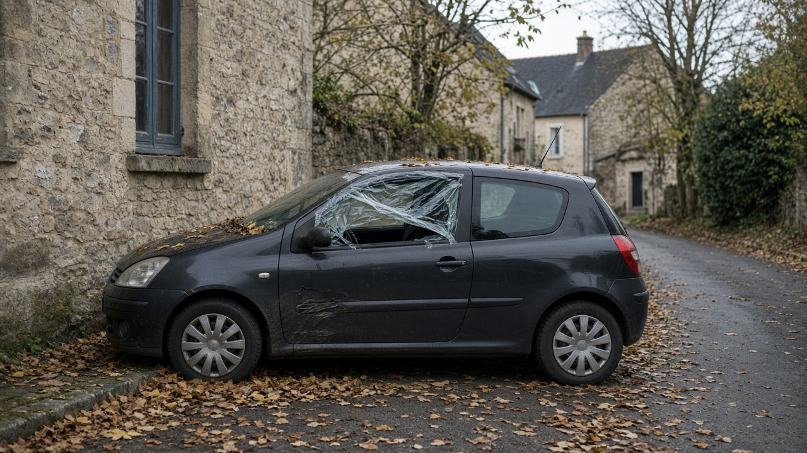

Ce samedi 17 octobre 2026, une mobilisation contre la vie chère traverse la France. La Dépêche la décrit comme une journée qui peut réunir d'anciens gilets jaunes, des lycéens, des étudiants, des salariés, des militants du climat et des agriculteurs. La Confédération paysanne la soutient. La FNSEA et les Jeunes Agriculteurs ne s'y associent pas. L'entourage du ministère de l'Intérieur a parlé d'environ 500 actions envisagées et de plus de 90 projets de manifestations. Emmanuel Macron a appelé au calme. Le ministère a indiqué que les blocages d'axes structurants ne seraient pas tolérés. Laurent Nuñez a précisé que les grenades assourdissantes pourraient servir en cas de violences urbaines extrêmement graves.
Dans la matinée, le direct de La Dépêche comptait 24 interpellations à Toulouse avant le cortège de l'après-midi, et décrivait des rassemblements calmes à Tarbes, Cahors, Agen, Auch et Foix. À Marseille, des gaz lacrymogènes ont été signalés près de la gare Saint-Charles. Un véhicule en feu boulevard Carnot, à Toulouse, a été présenté comme un incident mécanique, sans lien avec la journée. Cet article ne dresse pas le bilan des vitrines. Il répond à la question d'assurance dès qu'il y a casse, ou dès qu'un commerce n'a pas pu travailler.

Le contrat signé reste la règle du jour
L'article L. 121-8 du code des assurances dispose que l'assureur ne répond pas, sauf convention contraire, des pertes et dommages causés par la guerre étrangère, la guerre civile, des émeutes ou des mouvements populaires. Quand ces risques ne sont pas couverts, l'assuré doit prouver que le sinistre vient d'un fait autre qu'une guerre étrangère. C'est à l'assureur de prouver que le sinistre vient d'une guerre civile, d'une émeute ou d'un mouvement populaire.
Une vitrine brisée pendant un cortège n'est donc ni payée d'office, ni écartée d'office. Tout dépend de la clause du contrat, et de la preuve que l'assureur doit apporter s'il veut appliquer l'exclusion. Le même article vise l'habitation, l'automobile et la multirisque professionnelle. Le titre du contrat ne suffit pas : il faut la page vandalisme, bris de glace, vol, ou la page qui reprend l'exclusion.
Casse : vitrine, stock, voiture, logement
Pour un commerce, la multirisque professionnelle empile des garanties distinctes. Le vandalisme, le bris de glace et le vol ne jouent que s'ils figurent au contrat. Une vitrine, une porte, une façade taguée et un rayonnage renversé se lisent garantie par garantie. Le stock emporté se lit dans la garantie vol, qui demande en général des traces d'effraction ou de violence. Les photos horodatées, le constat, la plainte, les factures et les devis forment le dossier. On bâche et on sécurise. On ne jette pas les débris avant l'expert, sauf danger immédiat, et on garde la facture de chaque mesure conservatoire.
Pour une voiture, une formule tous risques inclut souvent le vandalisme. Une formule au tiers ne le reprend pas par son seul nom : une option vol et incendie peut couvrir certains dommages si le contrat le dit. Il faut lire la page, pas le slogan. Pour un logement, la multirisque habitation suit la même logique : bris de glace et vandalisme s'ils sont souscrits, article L. 121-8 si l'assureur établit l'émeute ou le mouvement populaire.
- Photographier la devanture, l'intérieur et le véhicule avant le nettoyage
- Déposer plainte pour dégradation et, s'il y a eu soustraction, pour vol
- Déclarer par écrit à l'assureur et conserver la preuve d'envoi
- Garder devis, factures d'achat et noms des témoins
- Limiter les travaux immédiats au bâchage, à la serrure et à la mise en sécurité
Journée d'activité difficile : fermer n'est pas casser
Beaucoup de commerces ont baissé le rideau, bâché la vitrine, renvoyé du personnel ou raté une livraison sans qu'un carreau soit brisé. Cette journée d'activité difficile n'est pas le même sinistre qu'une casse. Le bris de glace et le vandalisme réparent un bien abîmé. Ils ne remplacent pas une journée de chiffre d'affaires perdu.
La perte d'exploitation n'existe que si elle est souscrite. Beaucoup de clauses exigent d'abord un dommage matériel lui-même garanti, puis appliquent un délai de carence et une franchise. Une fermeture choisie, ou une fermeture sans atteinte aux locaux, reste souvent en dehors de cette garantie. Le comptable peut préparer les chiffres du jour, des mêmes jours des semaines précédentes et de l'an passé. Ce dossier sert si la clause est acquise. Il ne crée pas la garantie.
Dans le vocabulaire des assureurs, « activité difficile » désigne aussi un métier plus dur à placer : nuit, événementiel, déchets, démolition, accueil du public. La journée du 17 octobre ne change pas le code d'activité. Un questionnaire utile décrit le métier réel, les locaux et le stock. Le courtier ne promet ni un tarif ni une acceptation.
Mots-clés pour chercher la bonne garantie
Les recherches du jour tournent autour de quelques formules. Chacune correspond à une page du contrat, pas à un paiement automatique.
- manifestation 17 octobre 2026 : le contexte, pas une garantie en soi
- vitrine cassée assurance commerce et vandalisme multirisque professionnelle : bris de glace et vandalisme, s'ils sont souscrits
- émeute mouvement populaire assurance et article L.121-8 : l'exclusion que l'assureur doit prouver
- perte d'exploitation commerce fermé : le chiffre d'affaires manqué, seulement si la clause existe
- déclaration sinistre 5 jours : cinq jours ouvrés, deux jours ouvrés en cas de vol
- assurance auto vandalisme manifestation et assurance habitation dégradation : la formule du contrat, pas le titre
- loi finances 2026 émeutes : régime voté, décret non publié le 17 octobre 2026
- qui paie dégâts manifestation : assureur si la garantie est acquise, auteurs identifiés, et éventuellement l'État sous l'article L. 211-10
Délais de déclaration
L'article L. 113-2 du code des assurances demande d'aviser l'assureur dès que le sinistre est connu, et au plus tard dans le délai du contrat. Ce délai ne peut pas être inférieur à cinq jours ouvrés. Il est ramené à deux jours ouvrés en cas de vol. Une boutique pillée déclare donc le vol dans le délai du vol, et les dégradations dans le délai des dommages. La déchéance pour déclaration tardive, lorsqu'une clause la prévoit, ne peut être opposée que si l'assureur établit que le retard lui a causé un préjudice. Elle ne joue pas non plus lorsque le retard vient d'un cas fortuit ou d'une force majeure, par exemple un périmètre qui empêche d'entrer dans le local.
La loi de finances 2026 attend son décret
L'article 171 de la loi n° 2026-103 du 19 février 2026 crée un régime de dommages d'émeutes, aux articles L. 12-11-1 et suivants du code des assurances. Le texte définit l'émeute, prévoit une commission de qualification, impose plus tard une clause type dans les contrats de dommages aux biens et aux véhicules terrestres à moteur situés en France, et institue un fonds de mutualisation géré par la Caisse centrale de réassurance, avec la garantie de l'État. Les assureurs pourront céder ce risque à ce fonds. La composition de la commission, les franchises et le taux de contribution relèvent encore de décrets et d'arrêtés.
L'entrée en vigueur est une date fixée par décret, au plus tard douze mois après une décision favorable de la Commission européenne sur le régime d'aide d'État. Le 17 octobre 2026, ce décret n'est pas publié. Le fonds ne règle pas les vitrines de la journée. Le contrat en cours et l'article L. 121-8 s'appliquent.
Auteurs et État : des voies à conditions
Les auteurs identifiés d'une dégradation ou d'un vol peuvent être poursuivis. L'assuré garde un intérêt à réclamer la franchise et les postes que le contrat ne reprend pas. L'article L. 121-12 du code des assurances subroge l'assureur, dans la limite de ce qu'il a payé, dans les droits de l'assuré contre les tiers responsables.
Quand les auteurs restent inconnus, l'article L. 211-10 du code de la sécurité intérieure rend l'État civilement responsable des dégâts qui résultent de crimes ou de délits commis, à force ouverte ou par violence, par des attroupements ou rassemblements armés ou non armés, contre les personnes ou les biens. Les conditions sont cumulatives. Une réclamation chiffrée à l'agent judiciaire de l'État est possible pour le reste à charge. Un tribunal tranche. Cette voie n'est pas un versement automatique, et elle ne dispense pas de déclarer le sinistre à l'assureur.
Leads Opportunities, courtier ORIAS n° 15005935, à Varangéville dans le bassin nancéien, reprend le dossier partout en France. Le questionnaire multirisque décrit les locaux et le stock. L'habitation et l'auto ont leur propre questionnaire. Aucun prix n'est affiché ici : la garantie se lit dans le contrat, pas dans un article.
Questions frequentes
Ma vitrine a été cassée le 17 octobre : que faire le jour même ?
Sécuriser et bâcher, photographier avant de nettoyer, déposer plainte, déclarer par écrit à l'assureur, conserver devis et factures. Le délai du contrat ne peut pas être plus court que cinq jours ouvrés pour une dégradation, et deux jours ouvrés pour un vol.
Le régime émeutes de la loi de finances 2026 paie-t-il les dégâts du 17 octobre ?
Non. L'article 171 de la loi n° 2026-103 du 19 février 2026 entre en vigueur à une date fixée par décret, au plus tard douze mois après une décision favorable de la Commission européenne. Ce décret n'est pas publié le 17 octobre 2026. Le contrat et l'article L. 121-8 s'appliquent.
Un commerce fermé sans casse est-il indemnisé ?
La fermeture, le rideau baissé et le chiffre d'affaires manqué ne sont pas un bris de glace. La perte d'exploitation ne joue que si elle est souscrite, souvent après un dommage matériel garanti, avec carence et franchise. Il faut lire la clause.
L'assurance auto au tiers paie-t-elle une voiture dégradée pendant la manifestation ?
La formule au tiers ne reprend pas le vandalisme par son seul intitulé. Une option vol et incendie peut couvrir certains dommages si le contrat le prévoit. Une formule tous risques inclut souvent le vandalisme. La page des garanties tranche.
Comment demander un devis multirisque après cette journée ?
Le questionnaire multirisque est gratuit et sans engagement. Il décrit l'activité réelle, les locaux et le stock. Il n'affiche pas un prix. Un courtier ORIAS reprend le dossier avant toute souscription.